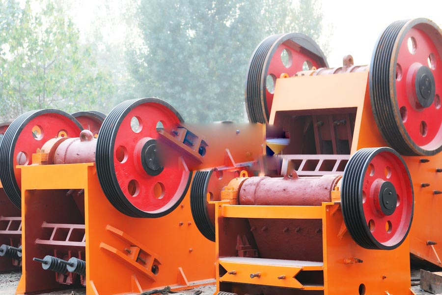

Construction waste crushing production line

Mobile construction waste crushing station for urban construction waste crushing.
Steel Slag Crushing Plant
Steel Slag Crushing Plant. Slag crusher, slag crusher price, CAG Mining Machinery Co., Ltd. Universal hammer crusher, large and small crusher, cinder slag crusher, crusher outstanding manufacturer, coke coal crusher equipment non-ferrous metal crusher small hammer crusher, mill slag.
Mine crusher equipment | Mining Crushing | slag crusher, impact crusher, hammer into the internal structure movable, replaceable after wear side using the other side of the production, so save it for the producer half of the funds to buy the hammer, and the device also increases the hydraulic unit.

Slag Crushing Plant
Now industry is so advanced, can not do without the exploitation and utilization of mineral resources, but with the exploitation of mineral resources, increasing resources, mineral resources utilization can not be hundred percent complete, the slag is a waste. The slag can be recycled or reused. Slag can be used to make the cement raw materials, or sand material.
Working process of the Slag production line
The production process of the slag production line can be included as : (storage ) ->vibrating feeder ->jaw crusher ->impact crusher ->vibrating screen ->final products .And all of the equipments are connected by the belt conveyor and chutes.The production process of the sand-making production line can be included as : (storage ) ->vibrating feeder ->jaw crusher ->grinding mill -> vibrating screen ->final products .And all of the equipments are connected by the belt conveyor and chutes .
Slag crusher, crushing preferred slag, slag ore through beneficiation or smelting residues after industrial production, slag plays an important role, especially in some of the major factories in industrial production, cement production and newborn energy production and other aspects.
CAG introduces the first ever-successful slag crusher plant in used by reputed steel plants in India, CAG slag crusher Plant is widely used for crushing especially slag, stone, refractories, coal & many other products & helps in the recovery of metal having commercial value, earn healthy profits from their waste product Slag of steel plant of furnace containing 10 to 20% pure metal but discharged in the form of slag or waste product due to improper operation. But the slag of steel plant is no more the waste product !because our slag crusher separator plant is simple & efficient source of purifying metal from slag or furnace waste.
Blast Furnace Slag Crushing Plant
We recommend you the blast furnace slag crushing plant. As a matter of fact, it’s professional crushing plant designer and provider. Apart from blast furnace slag crushing plant, there is also construction waste crushing plant, gravel sand crushing plant and granite rock crusher plant, etc.
After primary crushing and secondary crushing, you need blast furnace slag grinder mill for the slag further grinding.This will produce powder with more fine mesh.Often, in some blast furnace slag crushing plants, ball mill is playing its further grinding after blast furnace slag crushing.There are also coal mill , raymond mill , high pressure grinding machine and MTW European trapezium grinding machine , etc. These have been widely used for not only blast furnace slag grinding but also cement grinding, coal grinding plant, gold ore grinding , etc.
Gangue crusher, slag crusher, slag crusher, hammer mill, CAG professional customers gangue crusher, slag crusher, slag crusher, hammer mill and other mill equipment, over the years our company continue research and development and technological innovation.
Philippines slag crushing plant supplier. Slag mill is a series carried out by the two sets of rotor crushing materials, the equivalent of two crusher combined, through the first rotor crush the material, and then the second track after a thorough and effective rotor crushing into granules pellets.
Leave Me A Message, Now
If you have any questions regarding equipment prices, production line configuration or other problems, you can send a message to us, we will contact you soon.